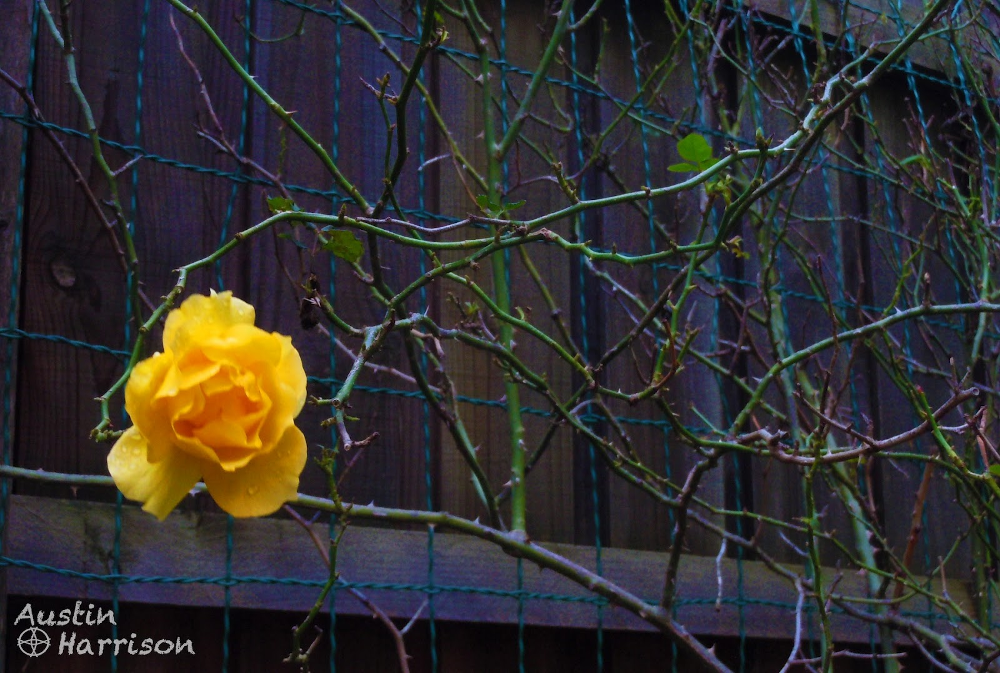
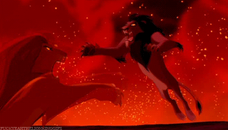

Emphasis Through Contrast
What makes something stand out?
What makes you pause, stop whatever you were doing - and pay attention?
More than likely it's something that's out of the ordinary. Something like a rose among thorns.

Or imagine a movie. It's time for the hero to face fearful odds. It's do or die. All the noise ceases. There is complete silence as everything in the frame slows down. With everything in slow motion, the battle begins. Everything is at stake. The film score soars. Numerous films use this strategy from The Matrix to The Lion King to Spider-Man.

The ability to bring focus to individual important elements is one of the keys to great design.
In any design each individual element has a certain level of importance.
It's absolutely crucial important to know exactly what is important in your design. What are the key things you want to have people take away? Your goal must be to make the truly important things stand out. You need to create a hierarchy of information.
Now some of you might say 'But everything is important!'
As tempting is it might be to say that, the truth is not everything can be emphasized. If everything is emphasized, nothing is emphasized. The very definition of emphasis is making something stand apart.
Common Novice Mistake
Many amateur designers will try to make everything stand out by using different emphasis tools for different elements. But, by trying to make everything stand out, nothing does.
I remember this one class I had in college for American Goverment. The teacher was very monotone. It was hard for me to concentrate and learn anything. Inevitably, I would start to daydream. Have you ever had to sit through a speech by a monotone speaker. How excruciating was that? The truth is without good levels of contrast, you end up with monotone design.
Contrast is very similar to intonation in speech. By setting a word apart with italics or color, you can make people focus on what you want.
People have short attention spans and having a monotone design where everything looks the same is the fastest way to lose a person's interest.
Tools For Achieving Contrast
There are several different tools you can use to make elements within a design stand out. Here are some of the big ones:
- Color
- Size
- Font
- White Space
Just like the rose among thorns, giving an item a striking color that contrasts with the rest of the design will make it stand out. Imagine a bar chart that illustrates 4 data points. Most people would stick with a standard chart. But as a designer, you need to pick out the most important thing that chart is trying to communicate. Are you focusing on the fourth point showing how far ahead you are compared to the composition? Monotonous data is likely to be ignored. But, if you draw people's attention to the one important thing, all of a sudden people can nmake comparisons.
Making something bigger makes it more noticeable and important.
Common Novice Mistake
Now a common mistake many big designers make is to try and use several tools at once to try and make something stand out. They will bold a text, plus change the color, plus make it bigger, plus underline it. Show restraint when using the contrast and emphasis techniques.